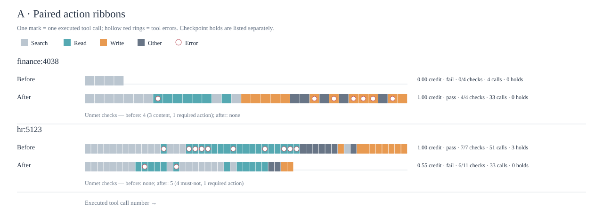
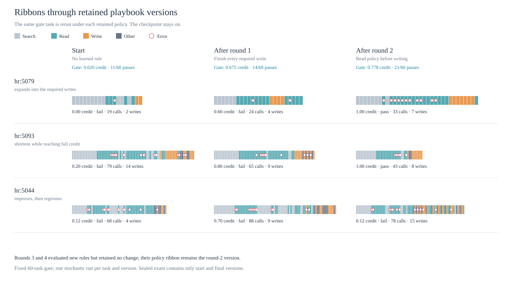
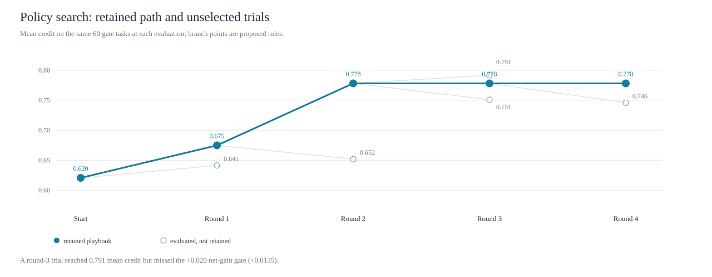
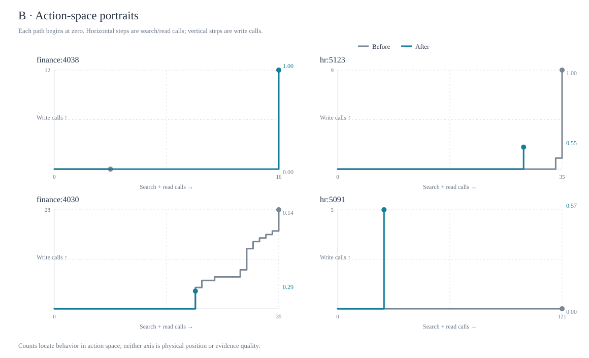
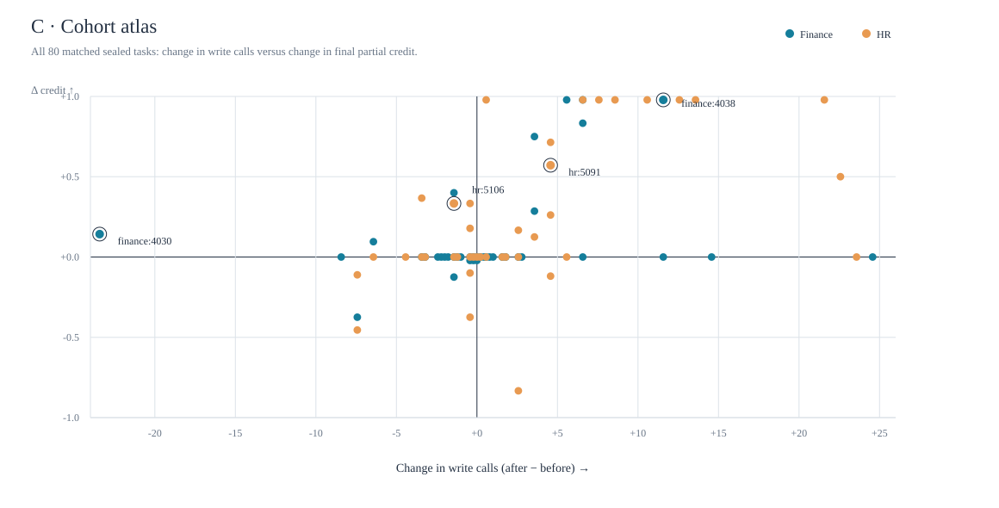
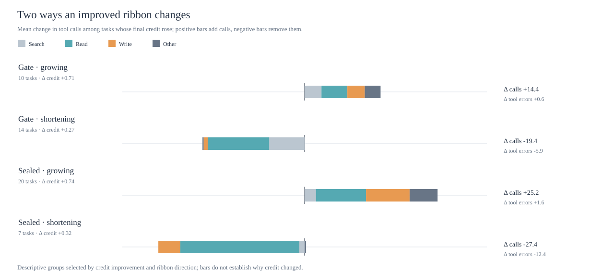

What shape does learning take?
A better agent can take a longer path to complete missing work—or a shorter path by escaping a loop. These views follow the same MiniMax M3 agent as its text playbook changes. The model weights do not change.
Browse all 80 before/after trajectories by Finance and HR →
Reading rule: ribbon length is the number of tool calls, not a reward. The grade comes from the final world state. A longer or shorter path is meaningful only alongside its actions and outcome.
Two improvements. Opposite shapes.
Each rectangle is one tool call. Color marks search, read, write, or other; red rings mark tool errors. Both tasks reach full credit after the playbook change, although one path grows and the other shortens.


Finance 4038 · expansion
The run grows from 4 to 33 calls, adds the required writes, and moves from 0.00 to 1.00 credit.
HR 5106 · compression
The run drops from 51 to 45 calls while reaching all 6 checks: 0.67 to 1.00 credit.
These are two selected illustrations, not a claim that every shorter or longer path improved. See all 80 paired paths and the declines.
Learning has branches, not a smooth curve.
Four rounds produced three retained playbooks: the starting rules, a rule to complete required writes, then a rule to read policy emails before writing. Later proposals did not clear the keep threshold.




Interpretation: the gate set selected the rules, so this progression is a selection trace. The 80 sealed tasks provide the independent before/after bookend. The keep margin was introduced after the first attempt and is disclosed as post hoc.
A trajectory without physical coordinates.
AutomationBench actions move through APIs, not space. A count-space portrait lets a path advance right for information gathering and up for writes. The cohort view then checks whether striking examples are typical.




The cohort association between added writes and credit gain is descriptive. The logged actions are samples of behavior, not a complete action-probability distribution.
Two ways an improved run changes.
Among tasks that gained credit, growing ribbons tend to add write sequences. Shortening ribbons tend to lose repeated reads and errors. The pattern appears in both the gate and sealed sets.


Growth · completing work
On the sealed set, improving long paths added 25.2 calls on average, including 8.2 writes and 5.7 consecutive write transitions.
Compression · escaping loops
Improving short paths lost 27.4 calls on average, including 22.6 reads and 12.4 tool errors.
Descriptive, not causal: these groups were chosen after looking at both grade and path direction. The chart identifies motifs to test; it does not prove why credit changed.
Task topology, playbook, or both?
I tested whether coarse task structure or prompt language could predict whether a final path would grow. Models trained on the gate set were evaluated on sealed tasks. Neither carried a strong direction signal.
| Available before the final run | Sealed AUC | What to take from it |
|---|---|---|
| Required/prohibited checks, services, policy emails, domain | 0.59 | Weak discrimination |
| Prompt words and two-word phrases | 0.57 | Weak discrimination |
| Starting ribbon length | 0.86 | Predictive, but mechanically tied to length change |
| Structure plus starting length | 0.83 | Added structure did not improve this baseline |
Run noise is material
Two runs under the same final playbook differed by a median of 7 calls on the 60 gate tasks. Only 39 of 60 kept the same grow/shorten/tie direction across three final-playbook runs against one starting run.
Graph idea worth testing
Borrow the NLP graph repo’s bipartite structure, but connect tasks to required actions, prohibitions, services, objects, and policy dependencies. Pair that with directed action-transition graphs.
Here “learning” means a revised text playbook selected from trial runs, not updated model weights or an inferred RL policy distribution. Full methods, caveats, and reproducible aggregates: topology analysis · figure guide.